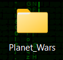

Al descargar el archivo comprimido del juego tendras que descomprimirlo en un sitio que si o si te acuerdes.
1. Descarga el juego:
2. Descomprime el archivo en una carpeta que te acuerdes (por ejemplo: escritorio o documentos, en mi caso escritorio):
Apartir de aqui necesitas tener instalado java (si ya lo tienes saltate este paso y con la version superior a 11.0.12):
Para saber que lo tienes instalado, pulsa Windows + R y escribe cmd luego pulsa Enter o pulsando la tecla de "Windows" y escribe "cmd" luego pulsa Enter. Se te abrira una ventana negra, en la cual tienes que escribir "java -version" o "javac -version" y si te sale algo como esto es que lo tienes instalado (la version tiene que ser superior a 11.0.12):
Ejemplo de java -version:
Ejemplo de javac -version:
1.Vete a esta web para descarga java:
2. Dale al boton de Download y selecciona la version que quieras (recomendamos superior a 11.0.12):
3. Ahora ejecutamos el instalador: cambiar foto
4. Aceptamos todo y le damos a next hasta que se instale:
5.Ahora comprobamos que esta instalado con lo que hemos hecho antes:
1.Abre la terminal y escribe sudo apt update y sudo apt upgrade para actualizar el sistema:
2. sudo apt install openjdk-version que quieres en este caso 17-jdk:

3. Ahora comprobamos que esta instalado con lo que hemos hecho antes:
4. Si lo teneis instalado, haremos lo siguiente para poder actualizar en este caso la version 21:
5. Ahora haremos lo siguiente y nos mostrara esto:
Yo lo he puesto manual pero normalmente se te pone el automatico(0) pero es por si no se te pone, aqui como he dicho si en automatico no se te pone, pon el numero de la version de la opcion que se te muestra